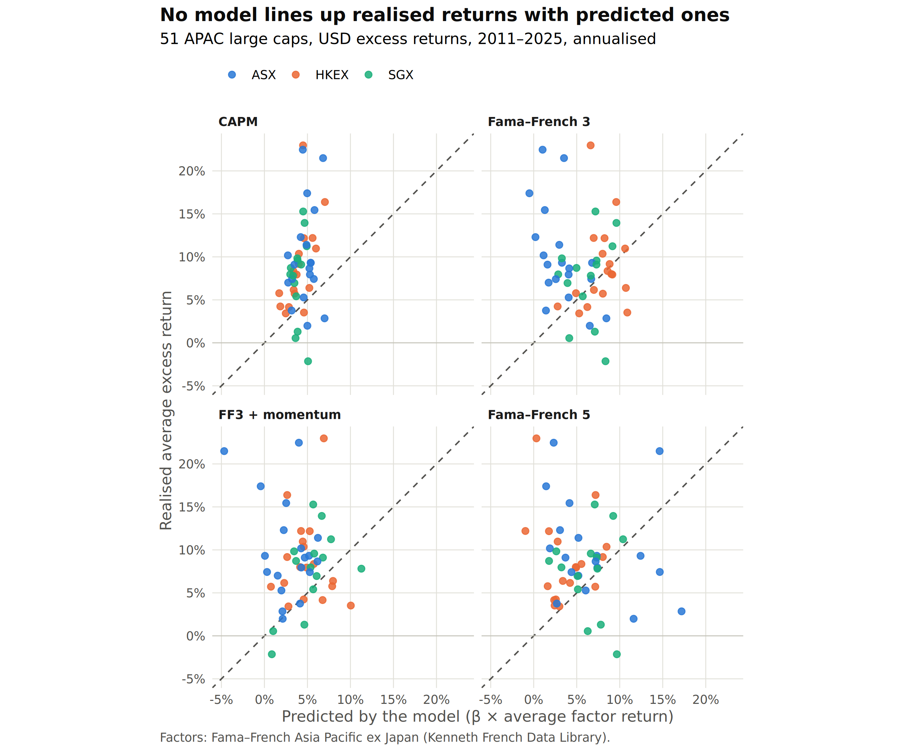

03 · Testing pricing models: CAPM vs zero-beta CAPM vs Fama–French
Which model prices the returns of APAC large caps, and does beta earn its premium?
Author
Kai Marsh
Published
November 16, 2026
Setup: packages, shared functions, data in USD
suppressPackageStartupMessages({ library(tidyverse); library(knitr) })source("../../R/models_linear.R")source("../../R/data_factors.R")source("../../R/plots.R")data_dir <-"../../data/processed"universe <-read_csv(file.path(data_dir, "universe.csv"), show_col_types =FALSE)ret <-read_csv(file.path(data_dir, "returns_monthly.csv"), show_col_types =FALSE)fx <-read_csv(file.path(data_dir, "fx_monthly.csv"), show_col_types =FALSE)ff <-get_french_apac("../../data/raw/french")# Convert local-currency total returns to USD, then subtract the US T-bill rate# that the French factors use, so test assets and factors share one numeraire.panel <- ret |>inner_join(universe, by =c("symbol"="ticker")) |>inner_join(fx, by =c("market", "month")) |>inner_join(ff, by ="month") |>mutate(ret_usd = (1+ ret) * (1+ fx) -1, ex = ret_usd - RF,ticker =sub("\\.(AX|HK|SI)$", "", symbol))months <-sort(unique(panel$month))stopifnot(all(count(panel, symbol)$n ==length(months))) # balanced panelY <- panel |>select(month, symbol, ex) |>pivot_wider(names_from = symbol, values_from = ex) |>arrange(month) |>select(-month) |>as.matrix()Fac <- ff |>filter(month %in% months) |>arrange(month)T_ <-nrow(Y); N_ <-ncol(Y)models <-list("CAPM"=c("MKT"),"Fama–French 3"=c("MKT", "SMB3", "HML"),"FF3 + momentum"=c("MKT", "SMB3", "HML", "WML"),"Fama–French 5"=c("MKT", "SMB", "HML", "RMW", "CMA"))fac_label <-c(MKT ="Market", SMB3 ="Size (SMB)", SMB ="Size (SMB)", HML ="Value (HML)",WML ="Momentum (WML)", RMW ="Profitability (RMW)", CMA ="Investment (CMA)")
Time-series tests: alphas and GRS for each model
ts_res <-imap(models, function(f, nm) { F <-as.matrix(Fac[, f]) g <-grs_test(Y, F) fit <-ols_matrix(Y, cbind(1, F)) r2 <-1-colSums(fit$resid^2) /colSums(sweep(Y, 2, colMeans(Y))^2)# per-stock HAC t-stats on alpha p_alpha <-map_dbl(seq_len(N_), function(j) { fj <-ols_matrix(Y[, j], cbind(1, F)); coef_table(fj, hac_vcov(fj, 4))$p[1] })list(grs = g, alpha = g$alpha, r2 = r2, p_alpha = p_alpha,predicted =drop(t(fit$coef[-1, , drop =FALSE]) %*%colMeans(F)), # beta' * mean factorrealised =colMeans(Y))})grs_tbl <-imap_dfr(ts_res, function(r, nm) tibble(Model = nm, Factors =length(models[[nm]]),`GRS F`= r$grs$stat, p = r$grs$p,`Mean |α| (p.a.)`=12*mean(abs(r$alpha)),`RMS α (p.a.)`=12*sqrt(mean(r$alpha^2)),`Alphas sig. (BH 5%)`=sum(p.adjust(r$p_alpha, "BH") <0.05),`Mean R²`=mean(r$r2),`Sharpe: factors`=sqrt(12) * r$grs$sharpe_factors,`Sharpe: tangency`=sqrt(12) * r$grs$sharpe_tangency))
Cross-sectional tests: Fama–MacBeth with Shanken errors, GLS, zero-beta CAPM
fm_res <-imap(models, function(f, nm) { F <-as.matrix(Fac[, f]); colnames(F) <- f fm <-fama_macbeth(Y, F, intercept =TRUE) fm$factor_mean <-c(NA, colMeans(F)) fm$model <- nm fm})fm_tbl <-bind_rows(fm_res)# Zero-beta (Black) CAPM: intercept = zero-beta excess rate; slope vs market premiumcapm_fm <- fm_res[["CAPM"]]g0 <- capm_fm[capm_fm$term =="gamma0", ]; g1 <- capm_fm[capm_fm$term =="MKT", ]mkt_mean <-mean(Fac$MKT)# Is the beta premium below the market premium? t on (gamma1 - mean MKT) using the# monthly gamma series minus the monthly market return.gam <-attr(capm_fm, "gammas")gap_series <- gam[, "MKT"] - Fac$MKTgap_t <-mean(gap_series) / (sd(gap_series) /sqrt(T_))# GLS cross-sectional regression for the CAPM:# lambda = (Z' S^-1 Z)^-1 Z' S^-1 mu, S = residual covariance from the time seriesB_capm <-t(ols_matrix(Y, cbind(1, Fac$MKT))$coef[-1, , drop =FALSE])S_res <- ts_res[["CAPM"]]$grs$resid_covgls <-gls_matrix(colMeans(Y), cbind(gamma0 =1, MKT = B_capm[, 1]), S_res)c_sh <-mean(Fac$MKT)^2/var(Fac$MKT)se_gls <-sqrt(diag(gls$vcov * (1+ c_sh) / T_ +diag(c(0, var(Fac$MKT) / T_))))capm_row <- grs_tbl |>filter(Model =="CAPM")alpha_sign <-imap_dfr(ts_res, \(r, nm) tibble(Model = nm, share_pos =mean(r$alpha >0),mean_alpha =12*mean(r$alpha)))capm_pos <- alpha_sign$share_pos[1]; capm_mean_alpha <- alpha_sign$mean_alpha[1]capm_alpha_mkt <-tibble(symbol =colnames(Y), a =12* ts_res[["CAPM"]]$alpha) |>left_join(universe, by =c("symbol"="ticker")) |>group_by(market) |>summarise(a =mean(a))stopifnot(all(capm_alpha_mkt$a >0)) # text: positive "in all three markets"b_capm <- B_capm[, 1]; mu <-colMeans(Y)hi_lo <-c(lo =mean(mu[b_capm <median(b_capm)]), hi =mean(mu[b_capm >=median(b_capm)]))
TipAnswer first
Every model is rejected, and mostly for the same reason. The GRS test rejects all four models jointly (p ≤ 0.005). But the pricing errors are one-sided: under the CAPM, 88% of stocks have a positive alpha, averaging 4.6% a year, in all three markets. That is the signature of a sample of survivors (today’s large caps beat what their risk predicted), not of a missing risk factor.
Extra factors explain more variance but price no better. The Fama–French factors raise the average R² from 40% (CAPM) to 47%. But the root-mean-square alpha is lowest for the CAPM itself (6.7% a year, against 7.2%–7.7% for the multi-factor models).
Beta is rewarded in the cross-section, roughly as the CAPM says. In Fama–MacBeth regressions the price of beta is 7.1% a year, against a realised market premium of 4.5%, and the zero-beta intercept of 2.2% is insignificant (t = 0.54). The flat security market line found earlier in a 16-stock ASX sample does not survive three markets and proper factors. The test has little power, though: the beta premium itself has t = 0.94.
So what: for cost-of-capital work on APAC large caps, the regional Fama–French factors do not earn their extra complexity. A CAPM beta (Module 01) is as defensible as any model tested here, provided the uncertainty is stated: a 95% interval on the regional market premium over these 15 years is 4.5% ± 8.5% a year.
Question
Module 01 measured how APAC large caps move with their markets. This module asks whether those exposures explain average returns, comparing four models:
A model “prices” the assets if, after controlling for the assets’ factor exposures, nothing is left over. Two tests check this. Time-series: are all the intercepts (alphas) jointly zero? Cross-sectional: do the estimated exposures earn premia equal to the factors’ own average returns, with no extra intercept?
Data
Test assets: the 51 large caps from Module 01 (ASX, HKEX, SGX), with monthly total returns converted to US dollars at month-end exchange rates. The sample runs from Feb 2011 to Dec 2025 (179 months). It ends earlier than Module 01’s sample (to Sep 2026) because the archived factor files stop at the end of 2025.
Factors: Fama–French Asia Pacific ex Japan factors (Australia, Hong Kong, Singapore and New Zealand), in USD, with the US one-month T-bill as the risk-free rate, from the Kenneth French Data Library. They are built from all listed stocks in the region, not just our sample.
Why USD: the factors are USD returns on a regional portfolio, so the test assets have to be in the same currency and in excess of the same risk-free rate. Module 01 used local currency against local rates, which suits single-market betas.
Data access note: the French library was unreachable from the network used for this analysis, so the factor files are copies of the original files from the Internet Archive (dated February 2026, data to December 2025). French rebuilds the full history each month, so later versions can differ slightly. Snapshot URLs and checksums are in data/SOURCES.md.
Table 1: Factor premia over the sample: average monthly return, annualised, with t-statistic.
Factor
Code
Mean (p.a.)
Volatility (p.a.)
t
Market
MKT
4.5%
16.8%
1.04
Size (SMB)
SMB3
-3.5%
8.3%
-1.64
Value (HML)
HML
5.3%
8.8%
2.32
Momentum (WML)
WML
13.0%
10.3%
4.89
Size (SMB)
SMB
-2.5%
7.9%
-1.23
Profitability (RMW)
RMW
5.2%
6.7%
3.00
Investment (CMA)
CMA
1.6%
6.4%
0.95
Method
All estimators are matrix-form functions in R/models_linear.R, each unit-tested against reference implementations and simulations.
Time series. For each model with K factors, \(\mathbf Y = \mathbf 1\boldsymbol\alpha' + \mathbf F\mathbf B' + \mathbf E\) is fitted to all 51 stocks at once. The Gibbons–Ross–Shanken statistic tests \(H_0: \boldsymbol\alpha = \mathbf 0\) jointly:
It has a useful reading in terms of Sharpe ratios. GRS is large when the best portfolio of the test assets and the factors (the tangency portfolio) has a much higher Sharpe ratio than the factors alone.
Cross section. Fama–MacBeth two-pass regressions. Pass 1 estimates each stock’s betas over the full sample. Pass 2 regresses each month’s excess returns on those betas, \(r_{i,t} = \gamma_{0,t} + \boldsymbol\beta_i'\boldsymbol\gamma_t + \eta_{i,t}\), and averages the slopes. Standard errors use the Shanken (1992) correction for the fact that the betas are estimated. If a model holds, \(\gamma_0 = 0\) and each premium equals its factor’s mean return. A positive \(\gamma_0\) with a beta premium below the market premium is the zero-beta (Black, 1972) CAPM. A GLS version of the cross-sectional regression, weighting by the inverse residual covariance, is reported for the CAPM as a check.
pred <-imap_dfr(ts_res, function(r, nm) tibble(model = nm, symbol =colnames(Y),predicted =12* r$predicted, realised =12* r$realised)) |>left_join(universe |>select(ticker, market), by =c("symbol"="ticker")) |>mutate(model =factor(model, levels =names(models)),market =factor(market, levels =names(market_cols)))lim <-range(c(pred$predicted, pred$realised))p_pred <-ggplot(pred, aes(predicted, realised, colour = market)) +geom_abline(slope =1, intercept =0, linetype ="dashed", colour ="#52514e", linewidth =0.5) +geom_hline(yintercept =0, colour ="#c3c2b7", linewidth =0.3) +geom_point(size =2, alpha =0.85) +facet_wrap(~ model, ncol =2) +coord_equal(xlim = lim, ylim = lim) +scale_colour_manual(values = market_cols) +scale_x_continuous(labels = scales::percent_format(accuracy =1)) +scale_y_continuous(labels = scales::percent_format(accuracy =1)) +labs(title ="No model lines up realised returns with predicted ones",subtitle =sprintf("51 APAC large caps, USD excess returns, %s–%s, annualised",format(min(months), "%Y"), format(max(months), "%Y")),x ="Predicted by the model (β × average factor return)", y ="Realised average excess return",caption ="Factors: Fama–French Asia Pacific ex Japan (Kenneth French Data Library).") +theme_report()dir.create("figures", showWarnings =FALSE)ggsave("figures/key_chart.png", p_pred, width =9, height =7.5, dpi =200, bg ="white")p_pred

Figure 1: Realised vs model-predicted average excess return for each stock (predicted = betas × average factor returns). Points on the dashed 45° line are priced perfectly; the vertical distance is the stock’s alpha.
\(\bar x_i\) stock \(i\)’s average monthly USD excess return · \(\hat{\boldsymbol\beta}_i\) its factor loadings from the time-series regression \(x_{i,t} = \alpha_i + \boldsymbol\beta_i'\mathbf f_t + \varepsilon_{i,t}\) · \(\bar{\mathbf f}\) average factor returns (one per factor in the panel’s model) · \(\hat\alpha_i\) pricing error, the vertical distance from the 45° line. Multiplying by 12 annualises.
The GRS statistics reject every model. Figure 1 shows the shape of the failure: points sit mostly above the 45° line under every model. The share of positive alphas ranges from 71% to 88% across the four models, and the mean alpha is positive in each market. A missing risk factor would push some stocks up and others down. A common upward shift is what survivorship produces: the sample is today’s large caps, which are large partly because their returns beat what their risk exposures predicted.
The Sharpe-ratio columns need care. The “tangency” Sharpe ratio is the best in-sample combination of 51 stocks and the factors. With that many assets it is heavily overfitted, which is exactly why GRS is a formal test rather than a comparison of these two numbers.
Adding factors changes the picture surprisingly little. The multi-factor models raise R², so they track month-to-month movements better. But their alphas are not smaller: the CAPM has the lowest root-mean-square alpha of the four. Size, value, momentum, profitability and investment exposures among these large caps do not line up with the gaps between their realised and CAPM-predicted returns.
Cross-sectional tests: beta is priced; the other factors are not
Table 3: Fama–MacBeth risk premia (annualised) with Shanken-corrected t-statistics, compared with each factor’s realised average return. Under the model, γ₀ = 0 and each premium equals its factor mean.
Model
Term
Premium (p.a.)
t (Shanken)
t (plain FM)
Factor mean (p.a.)
CAPM
Intercept γ₀ (zero-beta excess return)
2.2%
0.54
0.54
0 (model)
CAPM
Market
7.1%
0.94
1.16
4.5%
Fama–French 3
Intercept γ₀ (zero-beta excess return)
3.6%
0.84
0.85
0 (model)
Fama–French 3
Market
6.4%
0.85
1.06
4.5%
Fama–French 3
Size (SMB)
1.0%
0.18
0.20
-3.5%
Fama–French 3
Value (HML)
-3.8%
-0.94
-1.14
5.3%
FF3 + momentum
Intercept γ₀ (zero-beta excess return)
1.9%
0.46
0.47
0 (model)
FF3 + momentum
Market
8.5%
1.15
1.46
4.5%
FF3 + momentum
Size (SMB)
2.0%
0.36
0.40
-3.5%
FF3 + momentum
Value (HML)
-2.8%
-0.65
-0.79
5.3%
FF3 + momentum
Momentum (WML)
6.9%
0.91
1.01
13.0%
Fama–French 5
Intercept γ₀ (zero-beta excess return)
1.8%
0.42
0.45
0 (model)
Fama–French 5
Market
9.2%
1.20
1.55
4.5%
Fama–French 5
Size (SMB)
0.5%
0.10
0.11
-2.5%
Fama–French 5
Value (HML)
-6.5%
-1.51
-1.91
5.3%
Fama–French 5
Profitability (RMW)
-0.7%
-0.16
-0.19
5.2%
Fama–French 5
Investment (CMA)
-7.6%
-2.23
-2.73
1.6%
The CAPM cross-section. The price of beta is 7.1% a year, against a market premium of 4.5% over the same months. The gap (+2.6% a year, t = 0.60) is not significant. The intercept, the excess return of a zero-beta portfolio, is 2.2% a year (Shanken t = 0.54), also indistinguishable from zero. The GLS cross-sectional regression agrees: an intercept of 1.3% (t = 0.51) and a beta premium of 9.5% (t = 1.88). Put simply, the higher-beta half of the sample earned 11.0% a year in excess of T-bills and the lower-beta half 6.8%.
This overturns the earlier ASX-only result. A 16-stock ASX study, measured against an equal-weighted proxy, found a flat security market line, which pointed to Black’s zero-beta CAPM and the “betting against beta” anomaly. With three markets, USD returns and a proper regional market factor, the evidence is instead consistent with the standard Sharpe–Lintner CAPM: zero intercept, slope near the market premium. The honest caveat is power. With 51 stocks and 15 years, the beta premium is not significantly different from zero either (t = 0.94), so the data cannot reject a flat line strongly.
The multi-factor cross-sections do not line up with the factors’ own returns. Value (HML) earned 5.3% a year as a factor, but its price among these stocks is negative in every specification. Investment (CMA) gets a significantly negative price in the five-factor model (-7.6%, Shanken t = -2.23), against a factor mean of 1.6%. The factors are built from all listed stocks in the region, small caps included, and their premia do not show up across 51 large caps.
Limitations
Survivorship bias. The test assets are today’s large caps. This biases alphas upward for every model, so the GRS rejections overstate how badly the models price the typical APAC stock. A clean test needs the full historical constituent list, including delistings (a target for Module 02).
Individual stocks as test assets. Single stocks have noisy betas and returns. Portfolios sorted on characteristics (size, value, beta) are the standard test assets and give sharper tests, but need fundamentals data for this region.
Regional factors, local stocks. The French factors cover the whole Asia Pacific ex-Japan region, while each stock also moves with its own market and currency. Market-specific factors (Module 05) would be a fairer comparison.
Sample end. The archived factor files end in December 2025, nine months before the rest of the dataset.
References
Black, F. (1972). Capital market equilibrium with restricted borrowing. Journal of Business, 45(3), 444–455.
Carhart, M. M. (1997). On persistence in mutual fund performance. Journal of Finance, 52(1), 57–82.
Fama, E. F., & French, K. R. (1993). Common risk factors in the returns on stocks and bonds. Journal of Financial Economics, 33(1), 3–56.
Fama, E. F., & French, K. R. (2015). A five-factor asset pricing model. Journal of Financial Economics, 116(1), 1–22.
Fama, E. F., & MacBeth, J. D. (1973). Risk, return, and equilibrium: Empirical tests. Journal of Political Economy, 81(3), 607–636.
Frazzini, A., & Pedersen, L. H. (2014). Betting against beta. Journal of Financial Economics, 111(1), 1–25.
Gibbons, M. R., Ross, S. A., & Shanken, J. (1989). A test of the efficiency of a given portfolio. Econometrica, 57(5), 1121–1152.
Shanken, J. (1992). On the estimation of beta-pricing models. Review of Financial Studies, 5(1), 1–33.